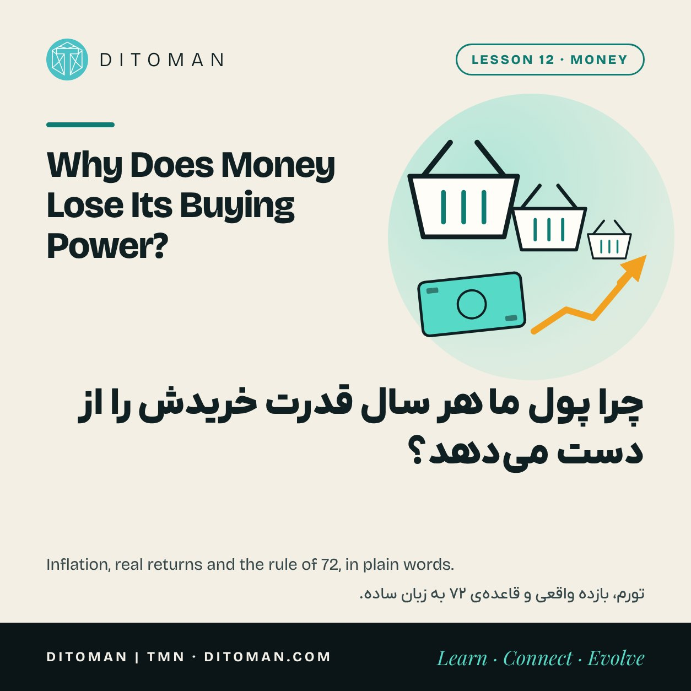

为什么货币会失去购买力？
چرا پول ما هر سال قدرت خریدش را از دست میدهد؟
钞票上的数字不变，但它能买到的东西却在缩水。本课用简单的例子解释通货膨胀，展示如何衡量它对储蓄的影响，并诚实地探讨比特币或稳定币能否有所帮助。
عدد روی اسکناس همان است، ولی چیزی که با آن میشود خرید کوچکتر میشود. این درس تورم را با مثالهای ساده توضیح میدهد، نشان میدهد چطور اثرش را روی پسانداز حساب کنیم و صادقانه بررسی میکند که بیتکوین یا استیبلکوین کمکی میکنند یا نه.
课程内容
محتوای درس
可用英文或波斯文阅读本课。
درس را به فارسی یا انگلیسی بخوانید.
几年前，一张钞票可以买一整袋杂货。今天同样的钞票只能买这袋的一部分。没有人拿走那张钞票。变的是它能买到多少东西。这种悄无声息的变化有个名字：通货膨胀。
我们一起来看这件事，因为几乎每个金钱决策，从储蓄到借贷再到购买加密货币，都始于一个问题：这笔钱以后值多少？
01. 什么是通货膨胀
通货膨胀是价格随时间普遍上涨。某一种商品变贵不是通货膨胀。通货膨胀是大多数东西的价格一起上涨，使每单位货币能买到的更少。
统计学家用一篮子商品来衡量它：一份典型家庭购买的固定清单，如食品、房租、交通和衣物。他们每个月对同一篮子商品定价。如果这篮子去年花100，现在花140，那一年的通胀率就是40%。
02. 它从哪里来
经济学家对细节争论不休，但有三个来源反复出现。
货币多于商品： 当一个经济体中的货币量比可买的东西增长得更快时，价格上涨。
成本上升： 当能源、进口或工资变贵时，生产者会把成本转嫁出去。
预期： 当所有人都预期价格上涨时，卖家会提前涨价，买家则抢着买，从而把价格推得更高。
03. 你会在新闻里看到的两个数字
同比通胀 把本月价格与去年同月比较。 十二个月平均通胀 对过去一整年取平均，所以变动更慢。
例如，伊朗统计中心报告称，截至2026年6月21日的月份，同比通胀为88.6%，十二个月平均通胀为62%。这两个数字描述的是同一个经济体，回答的是不同的问题。
04. 它对储蓄做了什么
闲置的钱以通胀的速度失去购买力。下表显示1亿现金在几年后还能买到多少。
| 年通胀率 | 1年后 | 3年后 | 5年后 |
|---|---|---|---|
| 5% | 9500万 | 8600万 | 7800万 |
| 20% | 8300万 | 5800万 | 4000万 |
| 40% | 7100万 | 3600万 | 1900万 |
一个快速估算的办法：用72除以通胀率。答案大致就是价格翻一番所需的年数。在6%时，约十二年。在36%时，约两年。
这也是为什么银行利率需要再看一眼。如果存款利息是20%而价格上涨40%，余额增加了，但购买力下降了。诚实的数字是利息减去通胀，称为 实际收益率.
05. 比特币或稳定币有帮助吗？
比特币的供应上限固定为2100万枚，所以没有人能多印。这与普通货币确实不同。但固定供应并不意味着价格稳定。比特币曾多次下跌超过一半。它在一个时期能保护购买力，在另一个时期却可能损害它。
美元稳定币跟随美元，正如第11课所解释的。这可能比较弱的货币更稳定，但美元也有通胀，而代币又增加了它自己的风险：发行方、支撑资产和出路。
所以两者都不是可以不假思索依靠的盾牌。它们是各有风险的工具，第06课的问题仍然适用。
本课要点
通货膨胀意味着同样的钱随着时间推移买到的更少。
看实际收益率：利息减去通胀。
72法则把通胀率变成你能感受到的年数。
比特币供应固定，但价格不稳定。稳定币跟随美元，并取决于其发行方。
了解通货膨胀并不会告诉你该买什么，它告诉你该先问哪个问题。
چند سال پیش با یک اسکناس میشد یک سبد کامل خرید کرد. امروز با همان اسکناس فقط بخشی از آن سبد را میشود خرید. کسی اسکناس را از ما نگرفته. چیزی که عوض شده مقدار خریدی است که از آن برمیآید. اسم این تغییر آرام «تورم» است.
این موضوع را با هم نگاه میکنیم، چون تقریباً هر تصمیم مالی، از پسانداز و وام تا خرید کریپتو، با یک پرسش شروع میشود: این پول بعداً چقدر میارزد؟
۰۱. تورم چیست
تورم یعنی بالا رفتن عمومی قیمتها در طول زمان. گران شدن یک کالا تورم نیست. تورم وقتی است که قیمت بیشتر چیزها با هم بالا میرود و هر واحد پول، خرید کمتری میکند.
آمارگیرها آن را با یک «سبد» اندازه میگیرند: فهرست ثابتی از چیزهایی که یک خانوار معمولی میخرد، مثل خوراک، اجاره، حملونقل و پوشاک. هر ماه قیمت همان سبد را حساب میکنند. اگر سبد پارسال ۱۰۰ بوده و امسال ۱۴۰ شده، تورم یکساله ۴۰ درصد است.
۰۲. از کجا میآید
اقتصاددانها سر جزئیات بحث دارند، ولی سه ریشه بارها تکرار میشود.
پول بیشتر از کالا: وقتی مقدار پول در اقتصاد تندتر از کالاها و خدمات موجود رشد کند، قیمتها بالا میرود.
هزینهی بالاتر: وقتی انرژی، واردات یا دستمزد گرانتر شود، تولیدکننده این هزینه را روی قیمت میکشد.
انتظار: وقتی همه منتظر گرانی باشند، فروشنده زودتر قیمت را بالا میبرد و خریدار زودتر میخرد و همین، قیمت را بالاتر میبرد.
۰۳. دو عددی که در خبرها میبینید
تورم نقطهبهنقطه قیمتهای این ماه را با همین ماه در سال قبل مقایسه میکند. تورم دوازدهماهه میانگین کل یک سال گذشته است و آرامتر تغییر میکند.
برای نمونه، مرکز آمار ایران اعلام کرد در خرداد ۱۴۰۵ تورم نقطهبهنقطه ۸۸٫۶ درصد و تورم دوازدهماهه ۶۲ درصد بوده است. هر دو عدد یک اقتصاد را توصیف میکنند، ولی به دو پرسش متفاوت جواب میدهند.
۰۴. با پسانداز چه میکند
پولی که بیحرکت بماند، با سرعت تورم قدرت خریدش را از دست میدهد. جدول نشان میدهد ۱۰۰ میلیون پول نقد بعد از چند سال هنوز چقدر خرید میکند.
| تورم سالانه | بعد از ۱ سال | بعد از ۳ سال | بعد از ۵ سال |
|---|---|---|---|
| ۵٪ | ۹۵ میلیون | ۸۶ میلیون | ۷۸ میلیون |
| ۲۰٪ | ۸۳ میلیون | ۵۸ میلیون | ۴۰ میلیون |
| ۴۰٪ | ۷۱ میلیون | ۳۶ میلیون | ۱۹ میلیون |
یک راه سریع برای تخمین: عدد ۷۲ را بر نرخ تورم تقسیم کنید. جواب تقریباً تعداد سالهایی است که قیمتها دو برابر میشود. با تورم ۶ درصد، حدود دوازده سال. با تورم ۳۶ درصد، حدود دو سال.
برای همین سود بانکی را هم باید دوباره نگاه کرد. اگر سپرده ۲۰ درصد سود بدهد و قیمتها ۴۰ درصد بالا برود، عدد حساب بزرگتر میشود ولی قدرت خریدش کمتر. عدد صادقانه «سود منهای تورم» است که به آن بازده واقعی میگویند.
۰۵. بیتکوین یا استیبلکوین کمکی میکنند؟
بیتکوین سقف ثابت ۲۱ میلیون واحد دارد و کسی نمیتواند بیشتر از آن بسازد. این تفاوتی واقعی با پول معمولی است. ولی عرضهی ثابت به معنی قیمت باثبات نیست. قیمت بیتکوین چند بار بیش از نصف افت کرده است. در یک دوره قدرت خرید را حفظ میکند و در دورهای دیگر به آن آسیب میزند.
استیبلکوین دلاری دنبال دلار حرکت میکند؛ درس ۱۱ این را توضیح داد. این میتواند از یک پول ضعیفتر باثباتتر باشد، ولی خود دلار هم تورم دارد و توکن ریسکهای خودش را اضافه میکند: ناشر، پشتوانه و راه خروج.
پس هیچکدام سپری نیستند که بشود بدون فکر به آن تکیه کرد. ابزارهاییاند با ریسک خودشان، و پرسشهای درس ۶ همینجا هم به کار میآیند.
چه برداشتی کنیم
تورم یعنی همان پول در طول زمان خرید کمتری میکند.
به بازده واقعی نگاه کنید: سود منهای تورم.
قاعدهی ۷۲ نرخ تورم را به تعداد سال تبدیل میکند؛ عددی که میشود حسش کرد.
بیتکوین عرضهی ثابت دارد ولی قیمت بیثبات. استیبلکوین دنبال دلار است و به ناشرش وابسته.
فهمیدن تورم نمیگوید چه بخرید. میگوید اول کدام پرسش را بپرسید.
下一课：你的钱实际放在哪里
قدم بعد: پول شما واقعاً کجاست
一旦你知道通货膨胀的作用，下一个问题就是钱放在哪里、由谁控制。第13课比较银行账户、交易所账户和个人钱包。
وقتی بدانیم تورم چه میکند، پرسش بعدی این است که پول کجا نگه داشته میشود و دست چه کسی است. درس ۱۳ حساب بانکی، حساب صرافی و کیف پول شخصی را کنار هم میگذارد.
核心概念
مفاهیم کلیدی
- 通货膨胀
- 一篮子价格（CPI）
- 同比通胀
- 十二个月平均通胀
- 购买力
- 实际收益率
- 72法则
- 固定供应
- تورم
- سبد قیمت (شاخص قیمت مصرفکننده)
- تورم نقطهبهنقطه
- تورم دوازدهماهه
- قدرت خرید
- بازده واقعی
- قاعدهی ۷۲
- عرضهی ثابت
学习目标
اهداف یادگیری
- 用一篮子价格的例子解释通货膨胀。
- 区分同比通胀与十二个月平均通胀。
- 根据利率和通胀率算出实际收益率。
- 用72法则估算价格翻倍的速度。
- 说明为什么比特币和稳定币都不是应对通胀的无风险答案。
- تورم را با مثال سبد قیمت توضیح دهید.
- تورم نقطهبهنقطه را از تورم دوازدهماهه تشخیص دهید.
- از نرخ سود و نرخ تورم، بازده واقعی را حساب کنید.
- با قاعدهی ۷۲ تخمین بزنید قیمتها چقدر زود دو برابر میشود.
- بگویید چرا بیتکوین و استیبلکوین هیچکدام جواب بیریسک تورم نیستند.
测验
آزمونک
检查一下你记住了什么。答案在每道题下面。
ببین چه چیزی در ذهنت مانده. پاسخ زیر هر پرسش آمده است.
第1题
پرسش ۱
什么是通货膨胀？
تورم چیست؟
A. 一种商品变贵
الف. گران شدن یک کالا
B. 价格随时间普遍上涨
ب. بالا رفتن عمومی قیمتها در طول زمان
C. 钞票数量减少
ج. کم شدن تعداد اسکناسها
正确答案：B
پاسخ درست: ب
第2题
پرسش ۲
一笔存款利息20%而通胀为40%。它的购买力会怎样？
سپردهای ۲۰٪ سود میدهد و تورم ۴۰٪ است. قدرت خرید آن چه میشود؟
A. 上升
الف. بیشتر میشود
B. 保持不变
ب. ثابت میماند
C. 下降
ج. کمتر میشود
正确答案：C。实际收益率为负。
پاسخ درست: ج. بازده واقعی منفی است.
第3题
پرسش ۳
年通胀率36%时，按72法则，价格大约多久翻倍？
با تورم سالانهی ۳۶٪، قیمتها حدوداً چند سال بعد دو برابر میشود (قاعدهی ۷۲)؟
A. 约2年
الف. حدود ۲ سال
B. 约7年
ب. حدود ۷ سال
C. 约12年
ج. حدود ۱۲ سال
正确答案：A
پاسخ درست: الف
第4题
پرسش ۴
同比通胀把本月价格与……比较
تورم نقطهبهنقطه قیمتهای این ماه را با چه چیزی مقایسه میکند؟
A. 上个月
الف. ماه قبل
B. 去年同月
ب. همین ماه در سال قبل
C. 过去十年的平均值
ج. میانگین ده سال گذشته
正确答案：B
پاسخ درست: ب
第5题
پرسش ۵
比特币的供应是固定的。这对它的价格意味着什么？
عرضهی بیتکوین ثابت است. این برای قیمتش چه معنایی دارد؟
A. 价格稳定
الف. قیمتش باثبات است
B. 价格只会上涨
ب. قیمتش فقط بالا میرود
C. 价格仍可能大幅波动
ج. قیمتش هنوز میتواند شدید بالا و پایین برود
正确答案：C
پاسخ درست: ج
来源
منابع
表格和72法则是算术示例，不是预测。这里的任何内容都不构成投资建议。
جدول و قاعدهی ۷۲ مثال حسابیاند، نه پیشبینی. هیچ بخشی از این درس توصیهی سرمایهگذاری نیست.
با هم دنبال میکنیم关注我们
新课程会首先在 Ditoman 的各个渠道发布。
درسهای تازه اول در کانالهای دیتومان معرفی میشوند.